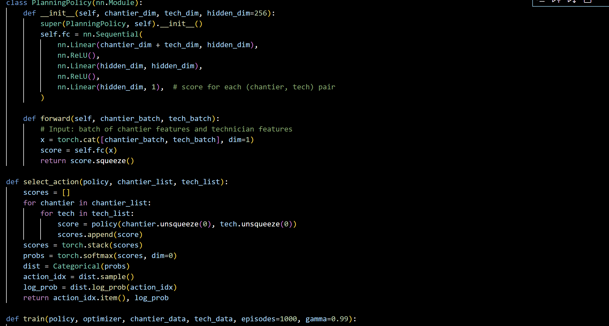
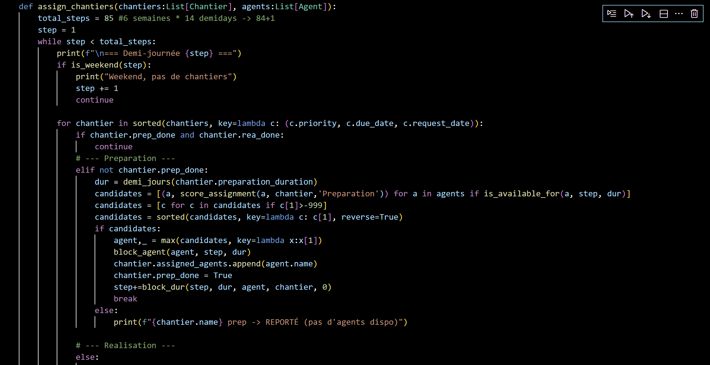
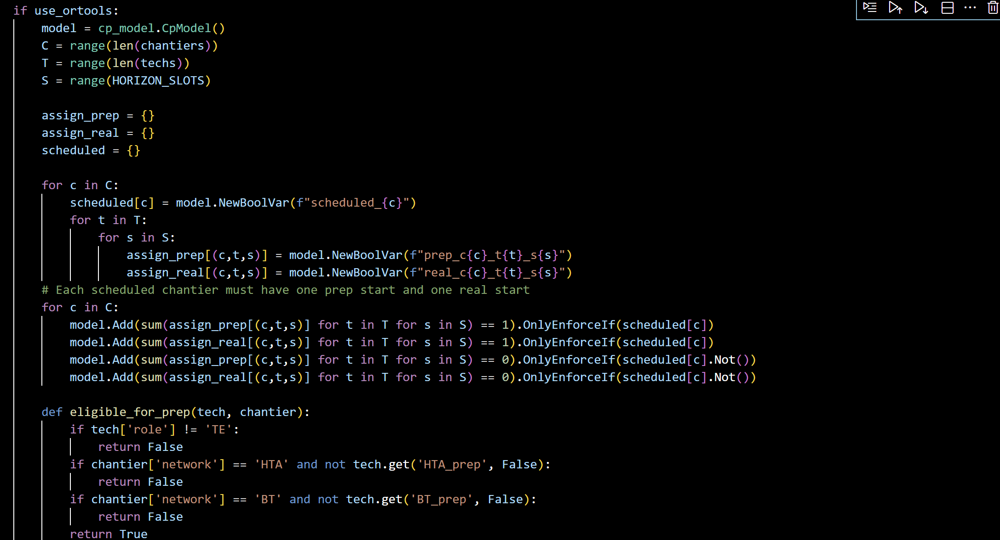
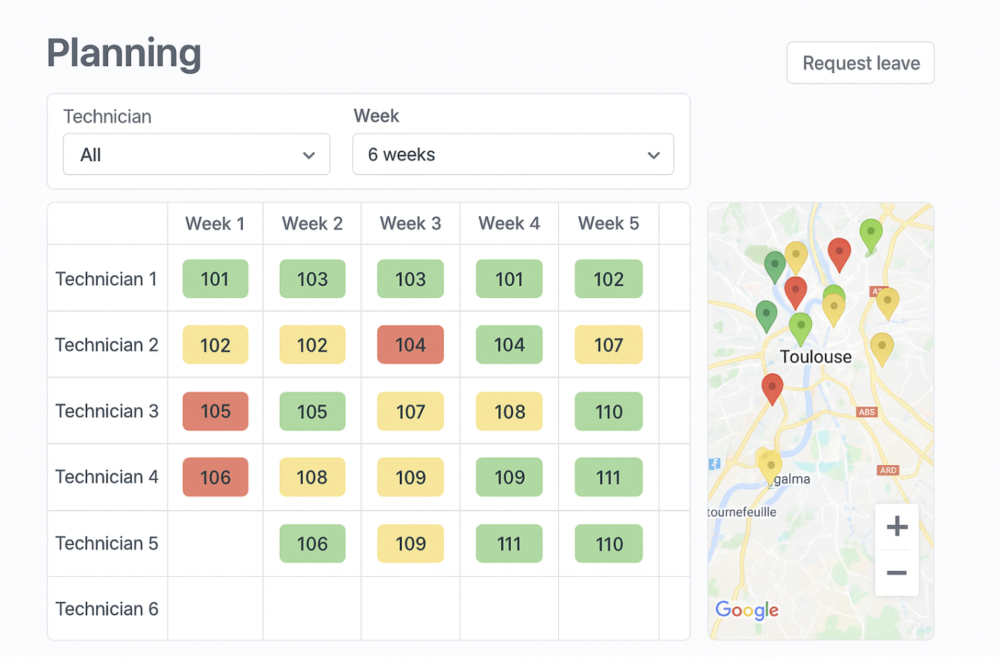
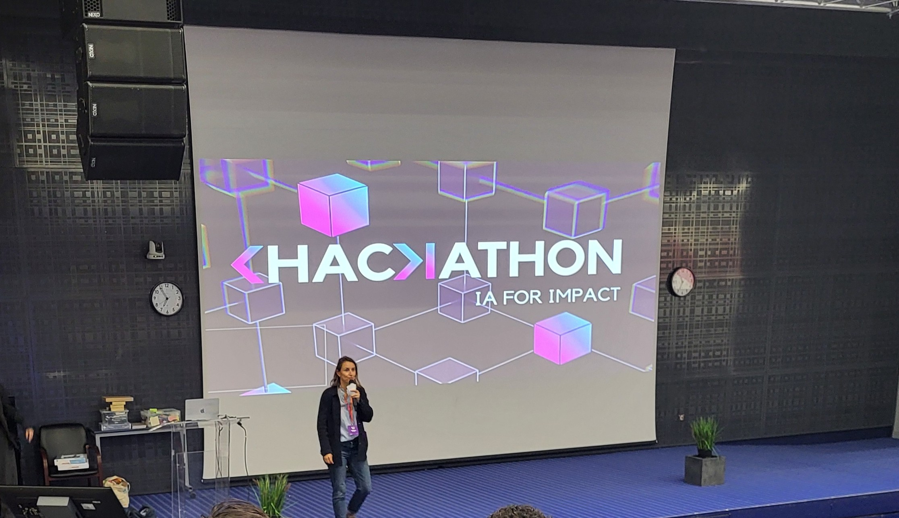

Developing an optimized planning system for electrical network maintenance and emergency response, taking into account a susbtantial amount of constraints.
See full challengeAfter understanding the problem, we had to figure out how to assign technicians to worksites under constraints. Since the hackathon focused on AI, we came up with a reinforcement learning approach using a policy gradient method : the agent gets points when it sends the right technician to the right place, making better decisions over time.

Even though our AI model showed promise, it struggled with the many constraints of the problem. Since reinforcement learning isn’t deterministic, the model often failed to consistently make the right choices. We decided to switch to a heuristic approach and started building a custom algorithm from scratch to clarify the logic.

Given the number of constraints, it was judicious for us to move on to a CP-SAT solver — an OR-Tools engine designed for combinatorial problems like this one. We made it return structured outputs across multiple Excel files: technician schedules, assigned worksites, and a status report of executed or postponed worksites.

The Excel files generated by the CP-SAT solver were integrated into an API that powered the planning interface over a six-week horizon and mapped worksite statuses using color codes (completed, issues, pending). The interface included functionalities such as handling leave requests, with the planning changing dynamically via updates.

We presented our project and its demo in front of a jury of experts as part of the ENEDIS challenge. From seven competing projects, one team per challenge was selected to pitch again in the finals, where the Grand Prix was awarded. Our team reached the finals but unfortunately we didn't take home the Grand Prix.

Throughout my studies, I investigated Artificial Neural Networks, which supported my contributions during this hackathon.
View PDF